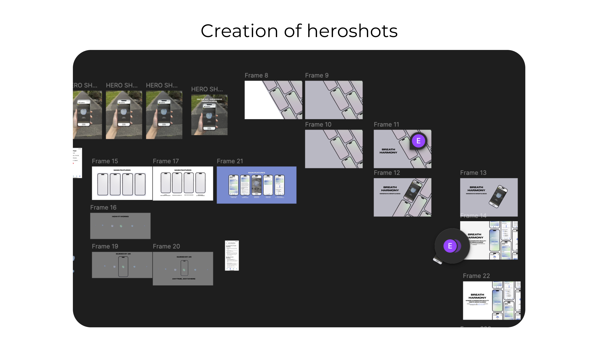
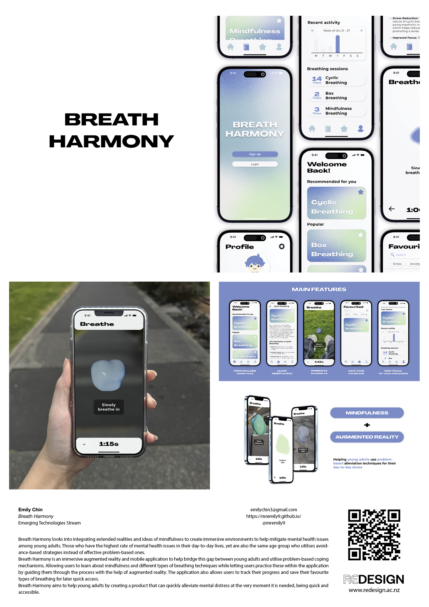

Blog 12 | Hero Shots/Posters
Design 302 | Date: 12/10/24 (Saturday)
A quick reflection based on the hero shot, making progress and taking steps to get to making my final posters for the exhibition.
What?
Over the past week, I worked on my final poster as it was due to be done in time for printing, but it was due much earlier than the final concepts and exhibition outcomes. This lead to me creating hero shots of both my prototypes, the Figma mobile application and also the AR prototype. I had worked on polishing these to then make the hero shots look as nice as I would hope the final output would be. I created a lot of mockups for the hero shots. I was also fully committed to the branding of my product, keeping a style and theme with hero shots. I then implemented these hero shots within the given InDesign template and filled out the written sections of my poster.
Figure 1.
The progress of creating hero shots.

Note. A screenshot of the author's Figma file that dedicates the progress in creating hero shots.
So what?
From this, I learned what a digital product hero shot could look like, as I hadn’t made a hero shot for something that was only a digital product before. This let me explore mockups and integrate information but only in small sections with the hero shot.
I had found that I was doing most of the work for the hero shots on the day it was due, which didn’t let me do as many infographics or diagrams as I had wanted to do/planned to do for some of my images within the poster.
I would've liked to explore creating infographics explaining the product in the context in which it would be utilised more; however, I was more confused about creating aesthetically good-looking mockups of my application and AR. I could only provide some text within the images themselves rather than utilising the images to display the message and content for me.
Had I planned out my time better and started on the infographics side of my project earlier, I could've implemented this within my final poster. I also hadn’t thought about implementing a graphic into my poster, as I had sketched out ideas for the hero shot before starting to create them; perhaps looking at other works and hero shots in general before planning it out would have allowed me to create more exciting hero shots and images for my poster.
Now what?
From this, I have learnt to plan ahead, well more in advance, as it allows me to have more time to come up with more creative ideas and expressions. I also learned how to create hero shots based on prototypes, and from this, I believe I could learn how to create even better hero shots in general. Hoping that in the future, and from now on, I work on things as they are given to me, even if it's little by a little bit, as time is of the essence.
Figure 2.
Final Breath Harmony Poster

Note. The author's final poster follows the template given.
References
J, D. (1994). Reflective practice for practise. PubMed, 14(1), 47–50.
https://pubmed.ncbi.nlm.nih.gov/8303152
Rolfe, G., Freshwater, D., & Jasper, M. (2001). Critical Reflection for Nursing and the Helping Professions: A User’s Guide. Palgrave MacMillan.
What? So what? Now what? (2020, January 30). The University of Edinburgh.
https://www.ed.ac.uk/reflection/reflectors-toolkit/reflecting-on-experience/what-so-what-now-what